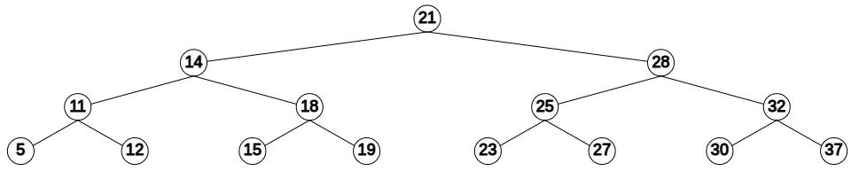

What is a Binary Search Tree?
A binary search tree (BST) is a rooted binary tree whose internal
nodes each store a key greater than all the keys in the node's left
subtree and less than those in its right subtree.
What does this mean in simpler terms? A root node is the
first node you enter into the tree. In the example below the root
node is "21" because it is the first node. When you are using this
tool remember that each node you insert after the root is compared
to the root in terms of numeric value. The next node to be
entered is "14". If you compare the value of "14" to "21", you can see
that it is smaller (less than) so it goes left. On the other
hand, when "28" is compared to "21" you can see that it is larger so
it is placed on the right.

X